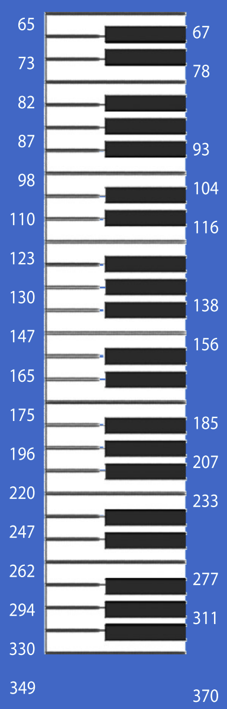
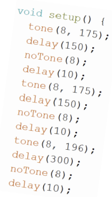
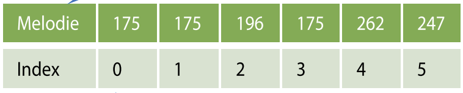
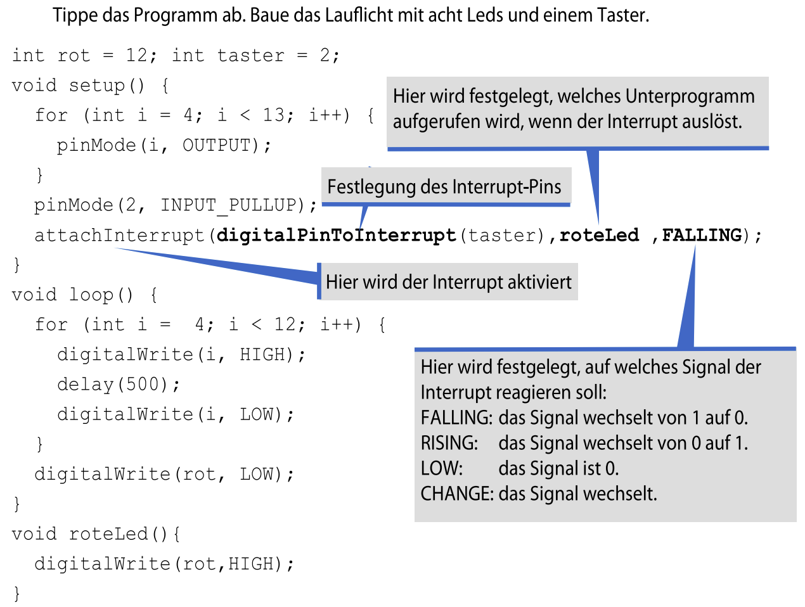
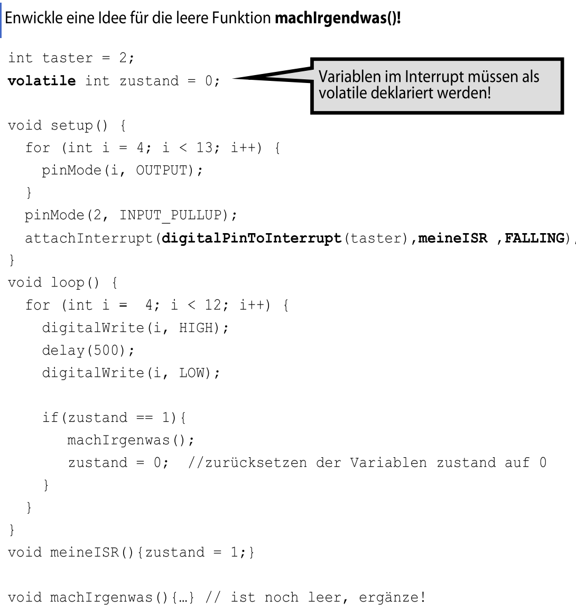
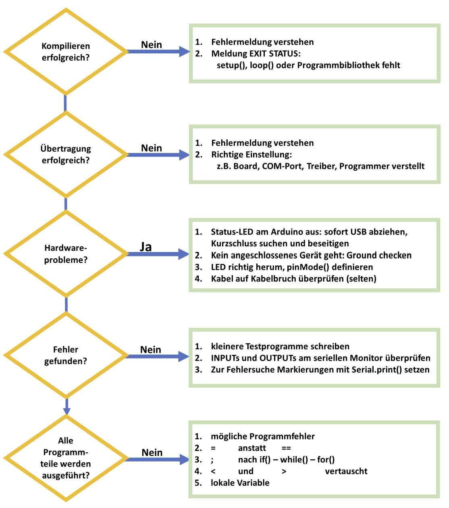

Du verbindest drei Werkzeuge für größere Arduino-Projekte: Arrays ordnen viele Daten, Interrupts erfassen kurze Ereignisse und eine feste Fehlersuchstrategie macht unsichtbare Programmabläufe überprüfbar.
loop() ausführen.Auf dieser Lernseite arbeitest du an drei typischen Arduino-Themen: Listen mit vielen Werten, schnelle Reaktionen auf Taster und systematische Fehlersuche. Du liest, denkst nach, probierst aus und sicherst dein Wissen direkt mit Aufgaben auf der Seite.
Du lernst, wie du viele Werte in einer Liste speicherst und damit zum Beispiel Melodien oder Wortlisten verwaltest.
Du untersuchst, wie der Arduino auf kurze Signale sofort reagieren kann, auch wenn das Hauptprogramm beschäftigt ist.
Du baust dir einen klaren Prüfpfad auf, um Compiler-, Upload-, Hardware- und Logikfehler gezielt zu finden.
Die Anschlusslisten und Sketches gelten für den Arduino Uno R3 mit 5-V-Logik. Bei einem anderen Board prüfst du zuerst dessen Pinbelegung und Interrupt-Pins. Alle Programme hier kommen ohne zusätzliche Bibliotheken aus.
modul5_start. Ein Sketch enthält genau ein setup() und ein loop(); ersetze beim Einfügen die gesamte Vorlage.COM…. Vergleiche bei Unsicherheit die Liste vor und nach dem Einstecken; übernimm keine fremde Portnummer.L soll blinken. „Kompiliert“ allein bedeutet noch nicht „hochgeladen“.setup() erneut zu sehen.Erfolgskontrolle: Du kannst Blink hochladen und findest den tatsächlich verwendeten Port. Scheitert das, nutze das Kapitel „Troubleshooting“, bevor du die größeren Schaltungen aufbaust.
Jetzt lernst du, wie du Melodien, Notenwerte, Zeichen und Wörter als Listen speicherst. Du arbeitest Schritt für Schritt mit Tönen, Indizes, char-Arrays und vier passenden Übungsaufgaben.
Wie speicherst du viele zusammengehörige Werte so, dass dein Programm übersichtlich bleibt und du sie nacheinander verarbeiten kannst?
Du kannst Töne einzeln mit tone(Lautsprecherpin, Frequenz) ansprechen. Auf Dauer wird das aber unübersichtlich. Die Lösung sind Arrays: Listen, in denen mehrere Werte desselben Datentyps stehen.
Beim Deklarieren legst du Datentyp, Namen und oft auch die Länge fest. Die Länge steht in eckigen Klammern. Sind schon alle Werte eingetragen, kann man sie auch leer lassen. Jeder Listenplatz hat einen Index, und der beginnt immer bei 0.
Wenn du einer Variablen zum ersten Mal einen Wert zuweist, nennt man das Initialisieren. Genau so arbeitest du auch bei Arrays: Du legst zuerst fest, was gespeichert werden soll, und füllst die Liste dann mit Werten. Hier wird eine Melodie mit sechs Frequenzen gezeigt. Zusätzlich gibt es ein zweites Array mit Notenwerten wie Achtel, Viertel oder Halbe. So legst du nicht nur fest, welcher Ton gespielt wird, sondern auch wie lange.

Aufbau ohne USB: Verwende wie in Modul 2 einen geprüften kleinen passiven Lautsprecher:
D8 → 330 Ω → Lautsprecher → GND, bei Kennzeichnung „+“ auf der Widerstandsseite.
Der Widerstand begrenzt beim Uno R3 den Strom und hält den Ton leiser; 1 kΩ macht den Versuch noch leiser.
Ein passiver Piezo ist eine Alternative und kann ebenfalls mit dem Serienwiderstand angeschlossen werden.
Prüfe unbeschriftete Bauteile mit der Lehrkraft. Ein aktiver Summer mit festem Ton eignet sich nicht zum Vergleichen der Tonhöhen;
einen unbekannten Lautsprecher schließt du nicht ohne Vorwiderstand direkt an einen Pin an.
Speichere einen neuen Sketch als modul5_melodie und füge diesen vollständigen Code ein. Er spielt einmal nach Start oder RESET. Groß- und Kleinschreibung zählen: Verwende überall Melodie.
const byte lautsprecher = 8;
const int Melodie[] = {175,175,196,175,262,247};
const int notenWert[] = {8,8,4,4,4,2};
const int anzahlToene = sizeof(Melodie) / sizeof(Melodie[0]);
static_assert(anzahlToene == sizeof(notenWert) / sizeof(notenWert[0]),
"Die beiden Listen muessen gleich lang sein.");
void setup() {
Serial.begin(9600);
for (int i = 0; i < anzahlToene; i++) {
int tonDauer = 1000 / notenWert[i];
Serial.print(i);
Serial.print(": ");
Serial.println(Melodie[i]);
tone(lautsprecher, Melodie[i]);
delay(tonDauer);
noTone(lautsprecher);
int pauseZwischenNoten = tonDauer * 0.30;
delay(pauseZwischenNoten);
}
}
void loop() {}0.30 durch 0.60, lade erneut hoch und vergleiche. Ändere danach nur 1000 zu 2000. Halte fest, ob sich Tonhöhe, Tonlänge oder Pause verändern. Stelle für die folgenden Aufgaben die Ausgangswerte wieder her.Merke: Hier ist die Dauer einer ganzen Note auf 1000 ms festgelegt. Achtel, Viertel und Halbe dauern dadurch 125, 250 und 500 ms. Das ist eine gewählte Tempo-Vorgabe, keine allgemeingültige Notendauer. Die Pause kommt zusätzlich dazu; beim Speichern als int entfallen Nachkommastellen.
Die Zählvariable i wählt in beiden Arrays immer denselben Platz aus. So passen Tonhöhe und Notenwert zusammen.
Ein häufiger Fehler ist ein falscher Index. Wenn ein Array sechs Elemente hat, sind nur die Plätze 0 bis 5 gültig.
const int anzahlToene = sizeof(Melodie) / sizeof(Melodie[0]);
for (int i = 0; i < anzahlToene; i++) {
// Melodie[i] und notenWert[i] verarbeiten
}Mit sizeof berechnest du hier direkt am Array die Zahl seiner Elemente. Die Schleifengrenze passt sich beim Erweitern an. static_assert prüft bereits beim Kompilieren, ob das zweite Array genauso lang ist. Der Ausdruck gilt nicht unverändert für einen Zeiger, der an eine Funktion übergeben wurde.

Vergleiche die wiederholten Befehle im Bild mit dem vollständigen Array-Sketch. Dort steht der Ablauf nur einmal; der Index wählt die Werte aus. Prüfe bei jeder Erweiterung Länge und Schleifengrenze.
Fehlerprobe: Was würde bei 25 Einträgen und der Bedingung i <= 25 passieren?

Melodie enthält sechs Frequenzen. Der gemeinsame Index verbindet jeden Ton mit dem passenden Notenwert.Melodie[i] und notenWert[i] müssen zum selben Ton gehören. Deshalb sollten beide Arrays gleich viele Einträge besitzen und mit derselben Schleifenvariable gelesen werden.
Denke voraus: Welche falsche Ausgabe entsteht, wenn du einen Notenwert in der Mitte löschst, die Frequenz aber stehen lässt?
In Arrays müssen nicht nur Zahlen stehen. Mit char kannst du auch einzelne Zeichen speichern. Ein Beispiel ist char zeichen[] = {'P','f','e','r','d','1'};. Mit zeichen[3] würdest du das r ausgeben.
Ein char speichert beim Uno R3 ein Byte. Für einfache Zeichen wie '1' gilt die ASCII-Codierung: Das Zeichen hat den Code 49, während die Zahl 1 den Wert 1 hat. Umlaute können in UTF-8 mehrere Bytes benötigen.
Auch ein ganzes Wort kann in einem char-Array stehen: char wort[] = "Pferd"; enthält fünf Buchstaben plus das Abschlusszeichen '\0'. Das obige Array aus sechs einzelnen Zeichen besitzt dieses Abschlusszeichen nicht und darf nicht als ganze Zeichenkette ausgegeben werden. Für mehrere Wörter nutzen wir hier ein Array aus Zeigern: const char* woerter[] = {"Nacht", "Wind"};. Jeder Zeiger verweist auf eine Zeichenkette; die Zeichen hinter const char* werden über diesen Zeiger nicht verändert.
char, wird sie als Text behandelt.char-Array stehen einzelne Zeichen in einfachen Anführungszeichen.* speichert eine Adresse; der Text steht in der Zeichenkette, auf die er zeigt.werte[3] = analogRead(A0);.Behalte die Ton-Schaltung mit Vorwiderstand an D8 und speichere eine Kopie als modul5_melodie25. Ersetze im vollständigen Sketch beide Arraydeklarationen vollständig durch diese Listen; hänge sie nicht an die sechs Startwerte an. Alle anderen Zeilen bleiben stehen.
const int Melodie[] = {
196,196,220,196,262,247,196,196,220,196,
294,262,196,196,392,330,262,247,220,349,
349,330,262,294,262
};
const int notenWert[] = {
8,8,4,4,4,2,8,8,4,4,
4,2,8,8,4,4,4,4,8,8,
4,4,4,4,2
};i < 25 verwenden; im Sketch berechnet anzahlToene die Grenze.i <= 25 ungültige Zugriffe erzeugen würde. Teste absichtlich ungültige Indizes nicht am Board.Für die nächsten drei Aufgaben brauchst du nur Board und USB. Trenne vor dem Umbau USB und entferne die Ton-Schaltung. Lass A0 unbeschaltet. Speichere diesen vollständigen Sketch als modul5_tafeldienst und ersetze die Beispielnamen durch eine kurze eigene Liste.
const char* mitSchueler[] = {
"Martin","Volker","Frank","Kolja",
"Alexander","Mario","Peter","Rainer"
};
const int anzahl = sizeof(mitSchueler) / sizeof(mitSchueler[0]);
void setup() {
Serial.begin(9600);
randomSeed(analogRead(A0));
}
void loop() {
int index = random(anzahl);
Serial.print(index);
Serial.print(": ");
Serial.println(mitSchueler[index]);
delay(2000);
}random(anzahl) schließt die obere Grenze aus.Merke: random() erzeugt Pseudozufallszahlen. Ein freier A0-Eingang kann einen veränderlichen Startwert liefern, aber wiederkehrende Startwerte und wiederholte Namen sind möglich. Für eine feste Testfolge kannst du stattdessen randomSeed(12345); verwenden.
Lege einen eigenen Sketch modul5_literatur an. Board und Monitor bleiben wie bei 6.2. Der vollständige Startcode bildet „Wer reitet so spät durch x und y?“ aus zwei Wortlisten.
const char* x[] = {"Nacht", "Regen", "Nebel"};
const char* y[] = {"Wind", "Sturm", "Schnee"};
const int anzahlX = sizeof(x) / sizeof(x[0]);
const int anzahlY = sizeof(y) / sizeof(y[0]);
void setup() {
Serial.begin(9600);
randomSeed(analogRead(A0));
}
void loop() {
Serial.print("Wer reitet so spät durch ");
Serial.print(x[random(anzahlX)]);
Serial.print(" und ");
Serial.print(y[random(anzahlY)]);
Serial.println("?");
delay(2000);
}Du verteilst drei unterschiedliche Dienste auf drei Personen; jede Person soll genau einen Dienst bekommen. Unabhängiges Ziehen eines Namens für jeden Dienst könnte denselben Namen mehrfach liefern. Dieser vollständige Sketch mischt deshalb eine Liste mit allen Personenindizes. Speichere ihn als modul5_hausdienste.
const char* namen[] = {"Alex", "Robin", "Sam"};
const char* dienste[] = {"abwaschen", "aufräumen", "Staub wischen"};
const int anzahl = sizeof(namen) / sizeof(namen[0]);
static_assert(anzahl == sizeof(dienste) / sizeof(dienste[0]),
"Gleich viele Personen und Dienste erforderlich.");
int reihenfolge[anzahl];
void setup() {
Serial.begin(9600);
randomSeed(analogRead(A0));
}
void loop() {
for (int i = 0; i < anzahl; i++) reihenfolge[i] = i;
for (int i = anzahl - 1; i > 0; i--) {
int j = random(i + 1);
int temp = reihenfolge[i];
reihenfolge[i] = reihenfolge[j];
reihenfolge[j] = temp;
}
Serial.println("Neue Verteilung:");
for (int i = 0; i < anzahl; i++) {
Serial.print(namen[reihenfolge[i]]);
Serial.print(" darf ");
Serial.println(dienste[i]);
}
Serial.println();
delay(5000);
}{0,1,2}. Nimm als mögliche Zufallswerte zuerst j = 0 bei i = 2 und dann j = 1 bei i = 1. Schreibe die Indexliste nach jedem Tausch auf.Arrays machen Programme kürzer und klarer. Du kannst mit ihnen Melodien, Notenwerte, Zeichen oder ganze Wörter verwalten und später über Indizes oder Schleifen darauf zugreifen.
Du vergleichst die schnelle Erfassung einer Tasterflanke mit der späteren Verarbeitung in loop(). Dazu gehören Pull-Up, Pull-Down, Polling, attachInterrupt(), ISR und volatile.
Wie kann der Arduino einen Tastendruck sicher erkennen, auch wenn das Hauptprogramm gerade in einer Schleife oder in einem delay() steckt?
Ein offener Taster darf einen Eingang nicht elektrisch unbestimmt lassen. Ein Pull-Up-Widerstand zieht ihn zur Versorgung, ein Pull-Down-Widerstand zu GND. Der jeweils geschlossene Taster verbindet den Eingang mit dem gegenüberliegenden Pegel. Vertausche dabei keine Versorgungsleitungen einer bestehenden Schaltung.
Hier nutzt du INPUT_PULLUP und einen Taster zwischen D2 und GND. Am Uno R3 ist der Eingang offen HIGH (nahe 5 V) und gedrückt LOW (nahe 0 V). Beim Drücken entsteht eine fallende Flanke, beim Loslassen eine steigende. Der Uno R3 bietet keinen per pinMode() zuschaltbaren internen Pull-Down.
Wenn ein Programm Taster nur an bestimmten Stellen prüft, nennt man das Polling. In langen Schleifen oder bei delay() kann ein kurzer Tastendruck dann leicht verpasst werden.

Baue zuerst ohne USB. Du brauchst acht Lauflicht-LEDs und zusätzlich eine rote Melde-LED, jede mit eigenem 330-Ω-Vorwiderstand. Die rote LED gehört nicht zu den acht Lauflichtschritten.
| Bauteil | Verbindung am Uno R3 |
|---|---|
| Lauflicht-LEDs 1 bis 8 | Je D4, D5, D6, D7, D8, D9, D10, D11 → eigener 330-Ω-Widerstand → Anode der LED; Kathode → GND. |
| Rote Melde-LED | D12 → 330 Ω → Anode; Kathode → GND. |
| Taster | D2 → Tasterkontakt → gegenüberliegender Schaltkontakt → GND. Kein Anschluss an 5 V und kein externer Pull-Up nötig. |
| Breadboard | GND des Boards an die verwendete Masseleiste. Prüfe Unterbrechungen der Leiste und intern verbundene Reihen. |
Die Anode einer ungekürzten LED hat meist das längere Bein; die abgeflachte Gehäuseseite markiert üblicherweise die Kathode. Prüfe bei Unsicherheit das Bauteil. Bei vierbeinigen Tastern sind je zwei Beine schon intern verbunden. Wähle zwei Kontakte, die erst beim Drücken verbunden werden; prüfe das stromlos mit dem Durchgangsprüfer.
Speichere diesen vollständigen Sketch als modul5_interrupt_direkt, überprüfe ihn und lade ihn nach der Anschlusskontrolle hoch.
const byte leds[] = {4,5,6,7,8,9,10,11};
const byte rot = 12;
const byte taster = 2;
void roteLed() {
digitalWrite(rot, HIGH);
}
void setup() {
for (byte i = 0; i < 8; i++) pinMode(leds[i], OUTPUT);
pinMode(rot, OUTPUT);
pinMode(taster, INPUT_PULLUP);
attachInterrupt(digitalPinToInterrupt(taster), roteLed, FALLING);
}
void loop() {
for (byte i = 0; i < 8; i++) {
digitalWrite(leds[i], HIGH);
delay(500);
digitalWrite(leds[i], LOW);
}
digitalWrite(rot, LOW);
}attachInterrupt(...);-Zeile und füge ganz am Anfang von loop() if (digitalRead(taster) == LOW) roteLed(); ein. Vergleiche kurze Tastendrücke und langes Gedrückthalten. Stelle danach die Interrupt-Version wieder her.Erklärung: Die ISR setzt hier nur einen Ausgang und ist sehr kurz. Beim Uno R3 können Interrupts auch während delay() eintreffen. Das Lauflicht wird nach der ISR fortgesetzt. Die Polling-Kopie liest D2 dagegen nur einmal pro Umlauf und kann einen kurzen Tastendruck dazwischen verpassen.

volatile. Das gilt für zwischen ISR und Hauptprogramm geteilte Variablen.Ein Interrupt unterbricht das Hauptprogramm kurz, um eine Interrupt Service Routine (ISR) auszuführen. Die Erfassung kann schnell erfolgen; wann die eigentliche Aktion folgt, hängt vom Programm ab. Bereits gesperrte Interrupts oder eine laufende ISR können die Bearbeitung verzögern.
attachInterrupt(digitalPinToInterrupt(taster),
meineISR,
FALLING);attachInterrupt() bekommt die mit digitalPinToInterrupt(taster) ermittelte Interruptnummer, den ISR-Namen ohne Aufrufklammern und den Auslösemodus. Am Uno R3 unterstützen D2 und D3 diese externen Interrupts. FALLING reagiert auf HIGH → LOW, RISING auf LOW → HIGH, CHANGE auf beide Flanken. LOW ist pegelgesteuert und kann bei gehaltenem Taster wiederholt auslösen.
Für eine längere Reaktion merkt die ISR nur das Ereignis. In loop() übernimmst du den Merker und löschst ihn vor der Aktion. Beide Zugriffe gehören zusammen: Trifft die ISR dazwischen ein, könnte ein neues Ereignis sonst beim Löschen verloren gehen. volatile allein verhindert das nicht.
Behalte denselben Aufbau und speichere einen neuen Sketch modul5_interrupt_merker. Dieser vollständige Startcode lässt die rote LED als Beispielaktion einmal 200 ms leuchten. Ergänze anschließend deine eigene Idee in machIrgendwas().
const byte leds[] = {4,5,6,7,8,9,10,11};
const byte rot = 12;
const byte taster = 2;
volatile byte zustand = 0;
void meineISR() {
zustand = 1;
}
byte holeEreignis() {
// Nur aus loop() mit zuvor aktiven Interrupts aufrufen.
noInterrupts();
byte gemerkt = zustand;
zustand = 0;
interrupts();
return gemerkt;
}
void machIrgendwas() {
digitalWrite(rot, HIGH);
delay(200);
digitalWrite(rot, LOW);
}
void setup() {
for (byte i = 0; i < 8; i++) pinMode(leds[i], OUTPUT);
pinMode(rot, OUTPUT);
pinMode(taster, INPUT_PULLUP);
attachInterrupt(digitalPinToInterrupt(taster), meineISR, FALLING);
}
void loop() {
for (byte i = 0; i < 8; i++) {
digitalWrite(leds[i], HIGH);
delay(500);
digitalWrite(leds[i], LOW);
byte ausloesen = holeEreignis();
if (ausloesen == 1) machIrgendwas();
}
}delay(500) reagiert. Vergleiche das mit der direkten ISR-Version.machIrgendwas() durch drei rote Blinkimpulse mit jeweils 100 ms an und 100 ms aus. Prüfe erst diese Vorgabe, entwickle dann eine eigene kurze Aktion und beschreibe ihre erwartete Ausgabe. Wartezeiten und serielle Ausgaben gehören in die Aktion in loop(), niemals in meineISR().Merke: Nur die beiden Speicherzugriffe in holeEreignis() sperren kurz Interrupts. Die längere Aktion läuft mit eingeschalteten Interrupts. Nach der Übernahme eingetroffene Flanken bleiben im Flag für den nächsten Prüfpunkt erhalten; mehrere Flanken vor dem nächsten Übernehmen werden nicht gezählt.
Eine kurze ISR kann Flanken während eines delay() erfassen. Für längere Aktionen nutzt du einen mit loop() geteilten volatile-Merker, übernimmst und löschst ihn geschützt und verarbeitest ihn im Hauptprogramm. Ein Flag zählt keine Ereignisse und entprellt keinen Taster.
Jetzt lernst du, wie du Fehler systematisch findest: erst kompilieren, dann die Übertragung prüfen, dann Hardware und Programmlogik untersuchen.
Fehler sind beim Programmieren normal. Entscheidend ist nicht, ob ein Fehler auftritt, sondern wie du ihn suchst. Das Bild zeigt dir dafür einen klaren Prüfpfad.

Klicke zunächst nur auf den Haken „Überprüfen“. Lies die erste konkrete Fehlermeldung oberhalb von exit status 1; dieser Status meldet nur, dass der Vorgang gescheitert ist. Prüfe die genannte und die vorherige Zeile: Semikolon, Klammern, Schreibweise, setup(), loop() und gegebenenfalls Bibliotheken. Auch beim reinen Überprüfen muss das passende Board gewählt sein.
Wenn das Hochladen scheitert, prüfe zuerst Board, COM-Port, USB-Verbindung und Treiber. Die Programmer-Einstellung spielt beim normalen Hochladen über USB meist keine Rolle; sie wird erst wichtig, wenn du ausdrücklich „Hochladen mit Programmer“ oder einen Bootloader-Vorgang verwendest.
ON bleibt aus oder erlischt nach dem Anschließen: USB abziehen und den Aufbau stromlos auf Kurzschluss prüfen. Eine ausgeschaltete L-LED allein beweist keinen Kurzschluss. Bleibt ON am nackten Board aus, prüfe Kabel und USB-Versorgung.pinMode() definieren.Serial.print() Markierungen setzen, um den Ablauf sichtbar zu machen.= statt ==if(), while() oder for()< und > vertauschtwhile-Schleife kannst du zum Testen zum Beispiel Serial.print("Jetzt bin ich in der While-Schleife"); einsetzen.if (bedingung); besitzt eine leere Anweisung. Ein folgender eigenständiger Block läuft dann unabhängig von der Bedingung. Bei for (...); läuft erst eine leere Schleife und danach der Block einmal; while (bedingung); wartet leer und kann dauerhaft hängen. Der Block wird also nicht pauschal übersprungen.// Ausschnitt innerhalb von loop():
// sensorWert muss zuvor bestimmt worden sein.
if (sensorWert > 500) {
Serial.println("Zweig A");
} else {
Serial.println("Zweig B");
}Solche Markierungen helfen dir, den tatsächlichen Programmablauf zu sehen, statt nur zu raten.
Trenne USB vor dem Entfernen der Lauflichtschaltung. Nutze für dieses Labor nur Board und USB. Speichere einen neuen Sketch modul5_fehlerlabor. Der folgende Sketch ist vollständig und kompilierbar, enthält aber absichtlich einen Logikfehler. sensorWert ist ein vorgegebener Testwert, kein gemessener Sensorwert.
void setup() {
Serial.begin(9600);
int sensorWert = 400;
Serial.print("Testwert: ");
Serial.println(sensorWert);
if (sensorWert > 500);
{
Serial.println("Zweig A: Wert ist groesser als 500");
}
Serial.println("Testende");
}
void loop() {}if (...) und prüfe erneut beide Werte. Erkläre, warum ein erfolgreicher Upload die Logik nicht bestätigt.int sensorWert = 400;. Klicke auf „Überprüfen“. Notiere die erste konkrete Meldung und vergleiche markierte und vorherige Zeile. Stelle das Semikolon wieder her und überprüfe erneut. Die genaue Meldung darf je nach IDE-Version anders aussehen.> 500 mit >= 500. Notiere, wann der Grenzwert selbst dazugehört.Stopp & check: = weist zu, == vergleicht. Eine lokale Variable, die du bei jedem Schleifendurchgang erneut mit 0 initialisierst, zählt nicht über mehrere Durchgänge weiter. Solche Fehler können trotz erfolgreicher Kompilierung auftreten.
Gute Fehlersuche folgt einer Reihenfolge: Kompilieren, Übertragen, Hardware, Testprogramme, typische Syntax- und Logikfehler. So suchst du zielgerichtet statt zufällig.
Serial.print() mehr als bloßes Raten?loop().